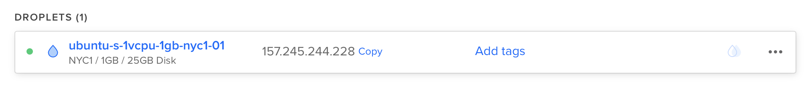
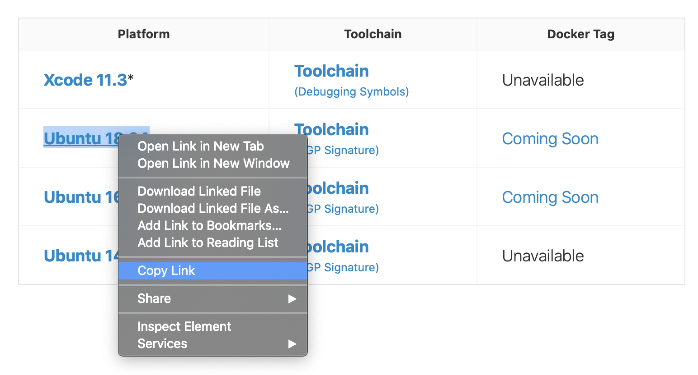

Deploying to DigitalOcean¶
This guide will walk you through deploying a simple Hello, world Vapor application to a Droplet. To follow this guide, you will need to have a DigitalOcean account with billing configured.
Create Server¶
Let's start by installing Swift on an Ubuntu server. Use the create menu to create a new Droplet.

Under distributions, select Ubuntu 18.04 LTS.

Note
You may select any version of Ubuntu that Swift supports. At the time of writing, Swift 5.2 supports 16.04 and 18.04. You can check which operating systems are officially supported on the Swift Releases page.
After selecting the distribution, choose any plan and datacenter region you prefer. Then setup an SSH key to access the server after it is created. Finally, click create Droplet and wait for the new server to spin up.
Once the new server is ready, hover over the Droplet's IP address and click copy.

Initial Setup¶
Open your terminal and connect to the server as root using SSH.
ssh root@your_server_ip
DigitalOcean has an in-depth guide for initial server setup on Ubuntu 18.04. This guide will quickly cover the basics.
Configure Firewall¶
Allow OpenSSH through the firewall and enable it.
ufw allow OpenSSH
ufw enable
Add User¶
Create a new user besides root. This guide calls the new user vapor.
adduser vapor
Allow the newly created user to use sudo.
usermod -aG sudo vapor
Copy the root user's authorized SSH keys to the newly created user. This will allow you to SSH in as the new user.
rsync --archive --chown=vapor:vapor ~/.ssh /home/vapor
Finally, exit the current SSH session and login as the newly created user.
exit
ssh vapor@your_server_ip
Install Swift¶
Now that you've created a new Ubuntu server and logged in as a non-root user you can install Swift.
Swift Dependencies¶
Install Swift's required dependencies.
sudo apt-get update
sudo apt-get install clang libicu-dev libatomic1 build-essential pkg-config
Download Toolchain¶
This guide will install Swift 5.2.0. Visit the Swift Downloads page for a link to latest release. Copy the download link for Ubuntu 18.04.

Download and decompress the Swift toolchain.
wget https://swift.org/builds/swift-5.2-release/ubuntu1804/swift-5.2-RELEASE/swift-5.2-RELEASE-ubuntu18.04.tar.gz
tar xzf swift-5.2-RELEASE-ubuntu18.04.tar.gz
Note
Swift's Using Downloads guide includes information on how to verify downloads using PGP signatures.
Install Toolchain¶
Move Swift somewhere easy to acess. This guide will use /swift with each compiler version in a subfolder.
sudo mkdir /swift
sudo mv swift-5.2-RELEASE-ubuntu18.04 /swift/5.2.0
Add Swift to /usr/bin so it can be executed by vapor and root.
sudo ln -s /swift/5.2.0/usr/bin/swift /usr/bin/swift
Verify that Swift was installed correctly.
swift --version
Setup Project¶
Now that Swift is installed, let's clone and compile your project. For this example, we'll be using Vapor's API template.
First let's install Vapor's system dependencies.
sudo apt-get install openssl libssl-dev zlib1g-dev libsqlite3-dev
Allow HTTP through the firewall.
sudo ufw allow http
Clone & Build¶
Now clone the project and build it.
git clone https://github.com/vapor/api-template.git
cd api-template
swift build
Tip
If you are building this project for production, use swift build -c release
Run¶
Once the project has finished compiling, run it on your server's IP at port 80.
sudo .build/debug/Run serve -b 157.245.244.228:80
If you used swift build -c release, then you need to run:
sudo .build/release/Run serve -b 157.245.244.228:80
Visit your server's IP via browser or local terminal and you should see "It works!".
$ curl http://157.245.244.228
It works!
Back on your server, you should see logs for the test request.
[ NOTICE ] Server starting on http://157.245.244.228:80
[ INFO ] GET /
Use CTRL+C to quit the server. It may take a second to shutdown.
Congratulations on getting your Vapor app running on a DigitalOcean Droplet!
Next Steps¶
The rest of this guide points to additional resources to improve your deployment.
Supervisor¶
Supervisor is a process control system that can run and monitor your Vapor executable. With supervisor setup, your app can automatically start when the server boots and be restarted in case it crashes. Learn more about Supervisor.
Nginx¶
Nginx is an extremely fast, battle tested, and easy-to-configure HTTP server and proxy. While Vapor supports directly serving HTTP requests, proxying behind Nginx can provide increased performance, security, and ease-of-use. Learn more about Nginx.